第11章
排队买彩票时遇到的10种人
彩票，是“希望部”发行的债券，买彩票是乐观的证明。用一张皱巴巴的1美元钞票就能换取一张价值0～5000万美元不等的神秘兑奖券，这有什么好犹豫的呢？
什么？！你觉得这听上去没什么吸引力？那你和大多数人的看法可不太一样。
不得不承认的是，我这辈子花在彩票上的钱（7美元）还没有一个月买牛角面包的钱多（别问我花了多少）。然而，大约一半的美国成年人都有买彩票的爱好。没想到吧？而且在买彩票的人中，收入在9万美元以上的人多于收入在3.6万美元以下的人1，有基本生活补贴的人多于没有基本生活补贴的人。买彩票比例最高的州是我的家乡马萨诸塞州2——大量富有、接受过良好教育的自由派人士居住在这里，人均每年在彩票上的花费多达800美元。对他们而言，买彩票和看橄榄球比赛、起诉邻居、恶搞美国国歌本质上没有什么区别——这就是美国人的一种消遣方式，人们出于各种各样的原因喜欢它。
来吧，和我一起去彩票店排队买票，研究一下这个所谓的“花小钱赚大钱”游戏的多重魅力。
1. 玩票型买家
看！这位是玩票型买家，他买彩票和我买牛角面包的原因一样：不是为了生存，而是为了快乐。
举个例子：在马萨诸塞州，有一种彩票叫作“1万美元现金奖”3，起这个名字的人简直是天才，把“1万”和“奖”放在任何词前面，都会无比诱人4。看看这款1美元彩票的票券设计，正面烟花般绚烂的图案就像是中奖后的狂欢，彩票的背面则介绍了以下复杂的获胜概率：
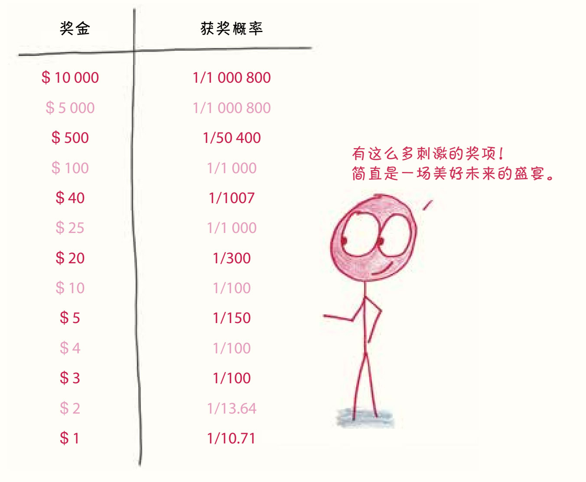
那么，你手中的这张彩票究竟值多少钱呢？我们还不知道，也许值10 000美元，也许值5美元，也许（我觉得十有八九）一文不值。
如果可以用一个数字来估计它的价值就好了。假设我们买的彩票不是1张而是100万张，这个样本量就足够大了，足以让我们冲出充满未知的现实世界，进入平静安宁的永恒大陆——在那个世界中，每一笔支出都能换来与预期比例一致的回报。在我们的100万张彩票中，概率为百万分之一的事件大约只会发生一次，概率为十万分之一的事件大约会发生10次，概率为四分之一的事件大约会发生25万次。
刮开那一沓沓小纸片的同时，我们可以预计开奖后的结果：
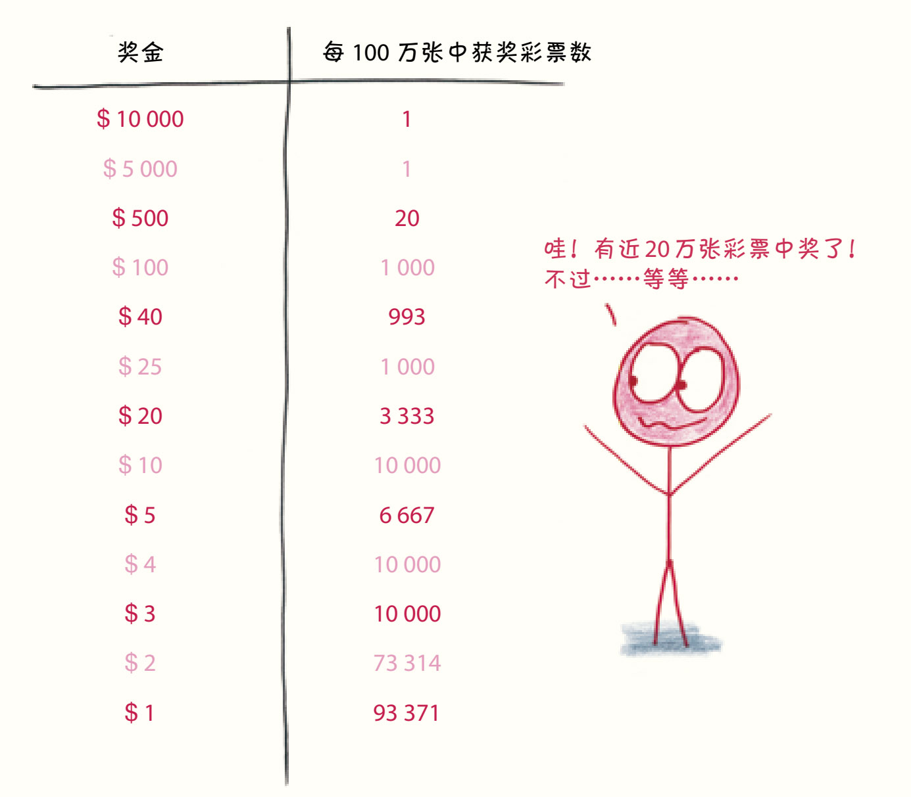
大概有20%的彩票中奖了5，算起来，我们100万美元的投资总共获得了大约70万美元的回报……这意味着我们为马萨诸塞州政府贡献了30万美元。
换句话说，平均每张1美元彩票的价值大约是0.7美元。
数学家们把这叫作彩票的期望值。我觉得这个名字很滑稽，因为你不该“期望”任何一张彩票的价值是0.7美元，就像你不会“期望”一个家庭有1.8个孩子一样。我更喜欢“长期平均值”这个词，“长期平均值”的意思很明确，就是：如果一遍又一遍不断地买彩票，你每张彩票能赚多少钱？
当然，每张彩票的期望值会比你支付的价格低0.3美元——这没什么大不了，毕竟娱乐通常都不是免费的，玩票型的买家们会很乐意付费参与这个游戏。在关于彩票的民意调查中，有一半的美国人说自己买彩票不是“为了钱”，而是“觉得好玩”。6这些人就是玩票型买家。也正因如此，当各州推出新的彩票种类时，彩票的总销售额会上升 7，这些彩票玩家并不认为新彩票是比旧彩票更好的投资机会（否则旧彩票的销量会相应下降），而是把它看作是一种新鲜的娱乐活动，就像影院新上映的电影一样。
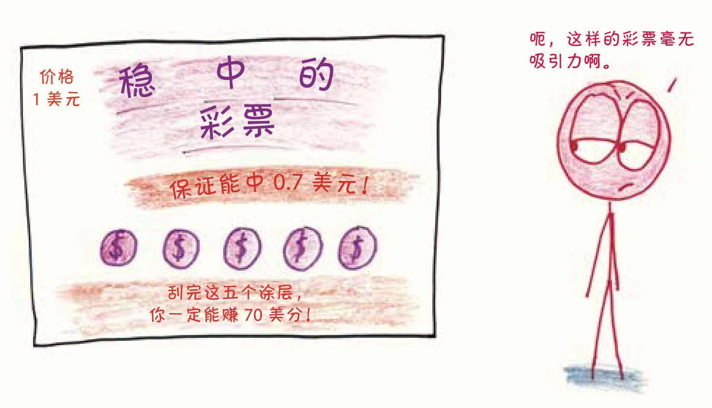
对于玩票型买家来说，真正有吸引力的是什么呢？是胜利带来的喜悦？是不确定性带来的肾上腺素激增？还是见证谜底揭开时的兴奋和满足感？这取决于玩家个人的喜好。
但我可以告诉你，有一样东西对他们来说肯定是不重要的，那就是彩票的经济利益。毕竟，从长远来看，彩票的价格几乎总是高于它们本身的价值。
2. 有文化的傻瓜
等一下，什么叫作“几乎总是”？为什么是“几乎”呢？哪个州会傻到卖彩票还亏钱？
但例外情况确实是存在的，因为这种大奖彩票都有一个共同的规则：如果某一周没有人中头奖，那么头奖奖金就会累积到下一周，从而产生更大的头奖。这一过程重复几次后，彩票的期望值确实可能会超过票价。比如说，2016年1月，通过积累头奖金额，英国国家彩票就把票价只有2英镑的彩票的期望值拉到了4英镑以上。8尽管这种情况看起来很奇怪，但它们通常能刺激足够多的购买，因此付出的成本是值得的。
在排队买彩票的队伍中，你会遇到一类非常特别的买家。这是给赌博研究爱好者的福利，我们可以像鸟类学家研究稀有鸟类一样仔细观察他们。瞧见了吗？他们就是有文化的傻瓜，一种罕见的笨蛋生物，他们看似精明地计算并期待着彩票的“预期价值”，一叶障目，以偏概全。
“期望值”的计算将奖金不同、概率各异的多种彩票提炼成一个个数字，是非常简单粗暴的分析方法。
看看我手中这两张标价都是1美元的彩票吧。
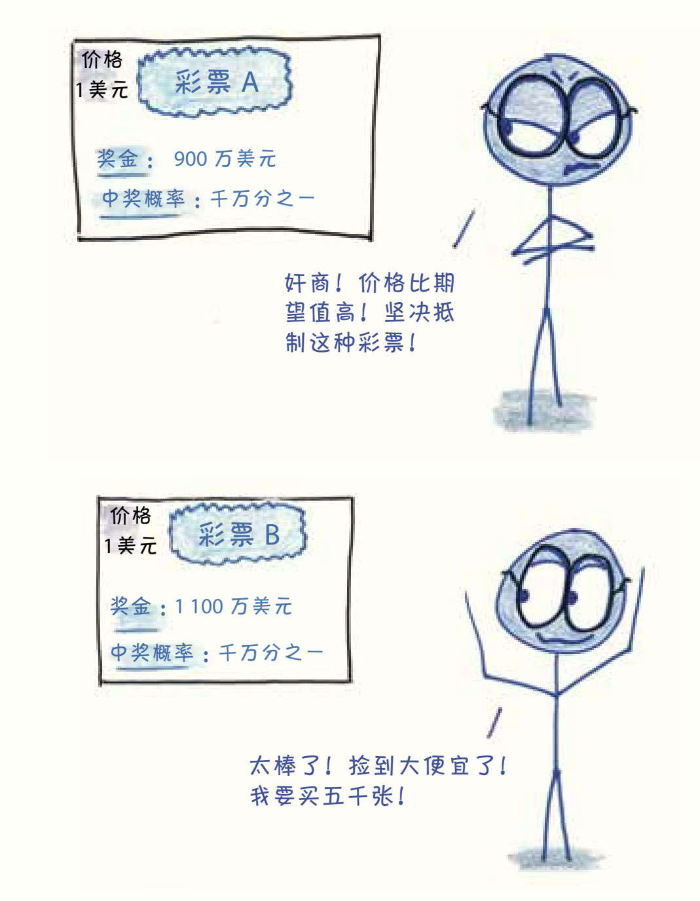
花1 000万美元购买彩票A时，如果你期望中900万美元的奖，那就相当于每张彩票损失0.1美元。而花1 000万美元购买彩票B时，从理论上来说，应该会得到1 100万美元的奖金，因此每张彩票可以获得0.1美元的利润。因此，对于那些迷信期望值的人来说，后者是淘金的良机，而前者是黄铜矿骗局。
然而……1 100万美元真的能给我带来比900万美元更大的幸福感吗？这两笔钱都比我现在的银行账户数字高出许多倍，如果真的中奖了，心理上的差异是可以忽略不计的。那么，为什么要认为它们一个是敲竹杠，而另一个是致富之路呢？
更简单地说，想象一下比尔·盖茨和你打一个赌：以1美元下注，他有十亿分之一的机会给你100亿美元。算算这个期望值，你就会蠢蠢欲动：如果以10亿美元下注，就可以获得100亿美元的预期回报。简直不可抗拒！
即便如此，有文化的傻瓜们，拜托还是抗拒一下吧，这个游戏你们可玩不起。就算你们好不容易凑齐了100万美元巨款，仍然有99.9%的可能遇到这样的结局：富豪盖茨对着身无分文的你挥挥手，又带走了100万美元。期望值是长期的平均值，如果真的和盖茨玩这个游戏，那么你将在“长期”到来之前散尽千金。
大多数彩票也是如此。也许否定“期望值”的终极武器就是下图这样把概率抽象化的1美元彩票：
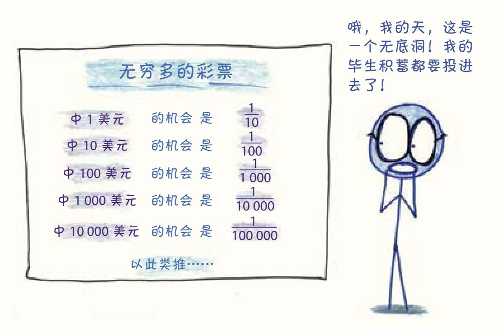
根据上图的概率，买10张彩票，你大概只能中1美元，也就是平均每张彩票中0.1美元，这太糟了。
买100张彩票，你大概能中20美元（10张彩票中1美元，1张彩票中10美元）。现在好一点儿了，现在平均每张彩票可以中0.2美元。
买1000张票，你可能会中300美元（100张彩票中1美元，10张彩票中10美元，1张彩票中100美元），每张票的平均价值达到了0.3美元。
继续买吧，你买的彩票数量越多，你的期望值就会越高。如果你能以某种方式买下1万亿张彩票，最有可能的结果是每张彩票最后价值1.2美元。如果你能买1千万亿张彩票，那就更好了，每张彩票的价值会高达1.5美元。事实上，你买的彩票越多，平均每张彩票带来的利润就越大。如果你能以某种方式投资10100美元，那么你将得到10101美元的回报。有了足够多的彩票，你想要多大的平均回报都能得到，彩票的期望值是无限大的。
但是，即便政府愿意支付这笔巨额奖金，我猜你也永远买不起足够多的彩票来一睹大奖风采。再买下去，你只会把自己毕生的积蓄花在这上面。破产往往是这些有文化的傻瓜的最后结局。
作为寿命有限的人类，我们还是放弃对“长期平均值”的期待吧。
3. 彩票代购
噢，看看那个排队的是谁？是彩票的代购！
和这里的大多数人不同，代购的收入是有保证的。他们不是来给自己买彩票的，他们有偿帮人跑腿、排队买票，再把彩票送到真正的买家手中。他们的收入虽然很低，但是非常稳定。
谁会付钱给这种代购呢？嗯，看看下一位彩票买家就知道了……
4. 大赌客
乍一看，这位买家和有文化的傻瓜如出一辙：同样两眼放光，同样笑容奸诈，同样笃信预期价值。不过，你再看看他遇到期望值大于价格的彩票时是怎么做的，就知道二者的区别了。那些有文化的傻瓜不停地砸钱，买了一沓倒霉的彩票却很少中奖，大赌客却想出了一个简单而邪恶的计划——不能只买几张彩票，要超越风险就必须把全部彩票都买下来。
想成为一个大赌客，要遵照以下四个既优雅又疯狂的步骤。
第一步：寻找期望值大于价格的彩票。这类彩票并不像你想象的那么罕见，根据研究人员的估计，有11%的抽奖彩票都符合这个要求。9
第二步：注意存在多个头奖赢家的可能性。越是巨额的头奖吸引的玩家越多，你越可能要和别人分享头奖，如此一来，期望值也会随之递减。
第三步：留意小的奖项。单独看的时候，这些安慰奖（例如6个数字中匹配成功4个）价值不大，但它们的中奖概率高，是一种有效的风险对冲。如果头奖被平分，小额奖金可以减少大赌客损失10。
第四步：当某个彩票看起来很有希望中奖时，买下所有可能的组合。
听上去很容易？其实也没那么容易。要成为大赌客，你必须具备非同寻常的资源：用于采购彩票的数百万美元资金、用于填写采购单的数百小时时间、受雇完成采购的几十个代购，以及愿意接受大量订单的零售网点。
为了理解这个任务的挑战性，我们来看一看1992年“弗吉尼亚彩票”的精彩故事11。
在那个2月，购买彩票的时机堪称完美，彩票发行方将头奖金额累积到了创纪录的2700万美元。“弗吉尼亚彩票”中只有700万个可能的数字组合，算下来每张1美元的彩票的期望值接近4美元。更妙的是，平分奖金的风险小得让人安心：以往的“弗吉尼亚彩票”里，共享头奖的情况只有6%，而这次的奖金又涨得如此之高，即使有三个人共享头奖，也是稳赚不赔的买卖。
于是，大赌客横空出世。由数学家斯蒂芬·曼德尔（Stefan Mandel）领导的、由2500名投资者组成的澳大利亚投资团体上演了一出好戏。他们打电话在杂货店和便利店连锁店的总部下了大量订单。
他们必须赶在时间前面。下单后，打印彩票还需要时间，因为没能按时打印完订购的彩票，一家连锁店杂货店还被迫为未能执行的订单向他们退还60万美元。开奖的时候，投资者只买到了700万个数字组合中的500万个，这样一来，他们就有近三分之一的概率失去头奖。
幸运的是头奖没有落空，尽管花了几周时间，才把那张彩票从500万张彩票中找出来。在和发誓“下不为例”的彩票专员周旋半天后，他们领取了奖金。
在20世纪80年代和90年代初，曼德尔等大赌客利用这个办法，得到了相当可观的收益，但那个刺激的时代早就一去不复返了。尽管这次购买“弗吉尼亚彩票”的经历充满波折，但是跟“超级百万”（Mega Millions）和“强力球”（Powerball）中令人生畏的数字相比（这两种彩票都有超过2.5亿种可能的组合），这些后勤上的麻烦都不过是小菜一碟。在这件事之后，“弗吉尼亚州彩票”也出台了相关规定，禁止大宗购票，那些大赌客或许永远也找不到合适的机会再干一票了。
5. 行为经济学家
对于大学的心理学家、经济学家、概率学家等各种学家来说，没有什么比研究人类如何应对不确定性更有趣了。人类是如何权衡危险与回报的？为什么人类会被某些风险吸引又对某些风险排斥？然而，在研究这些课题时，研究人员遇到了一个棘手的问题：人类的生活太复杂了。点餐、换工作、和好看的人结婚……人们做这些选择的时候就像在投掷一个有无数不规则面的巨大骰子。我们无法预测所有结果，也无法控制所有因素。
相比之下，彩票就简单多了。不但中奖的结果一目了然，概率的计算也很简单，这样的研究对象简直是每个社会学家都求之不得的。看，行为经济学家不是来这儿买彩票的，是来看别人买彩票的。
学者们对彩票购买行为的兴趣可以追溯到几个世纪以前。以17世纪末的概率学为例，那是金融业诞生的时代，保险方案和投资机会开始扩大蔓延，但当时关于不确定性的数学尚在发展初期，数学家们还不知道如何理解这些复杂的工具。12他们将目光转向了彩票，彩票的简单性在概率学理论的形成和完善中功不可没。
最近，经济学家丹尼尔·卡尼曼和行为科学家阿莫斯·特沃斯基共同发现了彩票购买者的一种心理模式。为更好地解释这种心理模式，我将介绍正在排队的下一位伙伴……
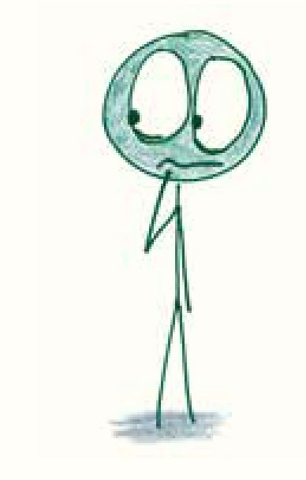
6. 一无所有的人
根据行为经济学的理论，你可能会对下面这个问题感兴趣13：
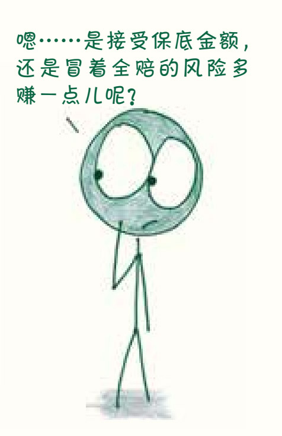
问题1：你更倾向于选哪个？
A：一定能得到900美元。
B：有10%的可能全赔，有90%的可能得到1 000美元。
从长远来看，这并不难选。选择B选项，在尝试100次之后，你大概会得到90次赚钱的机会，还有10次是令人失望的全赔。100次尝试总共得到9万美元，平均每次900美元。因此，B与A的期望值是相同的。
然而，如果你和大多数人一样，那么你面对这道题时也会有明确的偏向——选择拿保底的钱，而不是为了一点儿额外的奖励去冒空手而归的风险。这种行为被称为规避风险。
好了，再看看下一个问题：
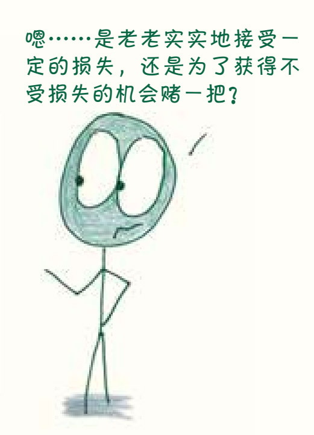
问题2：你更倾向于选哪个？
A：一定会损失900美元。
B：有10%的可能完全不损失，有90%的可能损失1 000美元。
这是问题1的镜像问题。从长期来看，每笔交易平均亏损900美元。但这一次，大多数人发现这种“一定”的选择不那么有吸引力了，他们宁愿为了10%不受损失的机会，接受一些额外的风险。这种行为被称为寻求风险。
上述的选择都是预期理论的特征，预期理论是描述人们经济行为的模型。14在收益方面，我们厌恶风险，更倾向于锁定有保证的利润，但在亏损方面，我们会愿意为了避免不好的结果而冒险赌一把。
预期理论的一个重要前提是做出设定。某个事件对你而言是“损失”还是“收益”，取决于当时的参考基数。看看下面的对比就明白了：
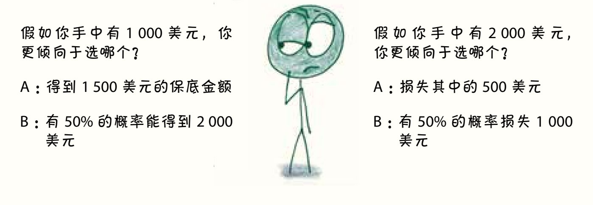
这两个问题提供了相同的选择：选择A的结果都是带走1 500美元，选择B的结果都是用类似抛硬币的方式决定最后是得到1 000美元还是 2 000美元。然而，在这两个问题中，人们给出的答案却不一样。在第一种情况下，他们更希望自己一定能拿走1 500美元；在第二种情况下，他们会倾向于冒险。这是因为这些问题基于不同的前提，有不同的参考基数。已经拥有2 000美元的时候，失去它的可能会让你倍感压力，你愿意冒险来避免这种损失。
人生有时候就是这么艰难，越艰难，人就越想赌一把。
这样的研究结果对彩票购买者是一个悲伤的启示。如果一个人的财务状况已经入不敷出了，他可能会感觉自己一直在遭受财产损失，这时他更愿意拿钱去买彩票。
这就像篮球比赛进入第四节，落后的球队开始故意犯规；或像在曲棍球赛还剩最后一分钟的时候，落后一分的球队用一个替补的前锋换下了守门员；又像在距离大选还有两周时，候选人对竞争对手进行恶意的攻击诋毁，以期撼动竞选阵营。这样的孤注一掷大大增加了风险，降低了期望值，最后造成的损失也许会比以前多得多。但是通过增加随机性，获胜的机会也增加了。兵临城下，所有人都会想着破釜沉舟、背水一战。
研究人员发现，穷人更有可能“为了钱”买彩票。15对他们来说，彩票不是一种有趣的消费方式，而是一种获取财富的高风险途径。没错，从期望值来看，买彩票的确是亏本买卖，但如果一个人已经亏了很多，他也许不介意冒着亏更多的风险放手一搏。
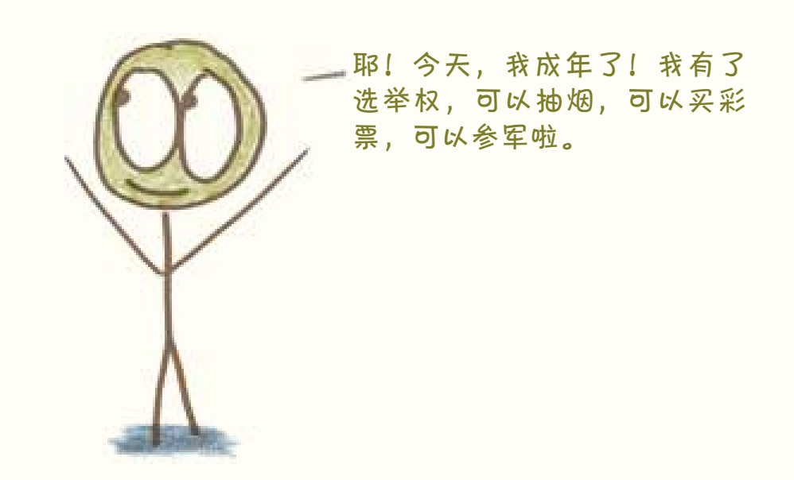
7. 刚满18岁的孩子
嘿，瞧那个排队买彩票的年轻人，他是彩票店里的新面孔，此情此景是否让你想起自己的青葱岁月，产生怀旧之情？
或者它会让你纳闷：“既然彩票这种产品都已经令人上瘾到了要禁止未成年人购买的地步，为什么每个州都在销售呢？”
嗯，回答这个问题之前，我们先看看另一个人……
8. 尽职的纳税人
向我们的下一位朋友问好吧，这是一位平民英雄，一位尽忠职守的纳税人。
不论州政府征税时的态度多么亲民友好，应该都没有人会喜欢自己的财产被征收的感觉。在美国，各个州政府尝试了对林林总总的东西征税（收入、零售、房地产、礼物、遗产、香烟等），但没有一种税能为纳税人带来实在的乐趣。直到20世纪70至80年代，这些州政府无意间从一个古老的思维妙计中得到了灵感。
如果能把纳税变成一种游戏，就能吸引人们主动排队纳税。
既然“公民交出1美元，政府留下0.3美元”是招惹民怨的税收提案，何不试试将它调整为“公民交出1美元，政府留下0.3美元，将剩余的钱全部赠送给一位随机抽选的公民”呢？一个奇特的现象产生了，愿意交钱的人蜂拥而至。现在你明白了吧？美国政府卖彩票不是为了做慈善，而是为了增加财政收入，因为这是史上最有效的创收计划之一。州政府售出的彩票每年能带来约300亿美元的利润，占州预算的3%以上。16
看穿他们的目的后，是不是觉得他们有些虚伪？17各州的法律都禁止赌博，政府却在便利店肆意经营着与赌博别无二致的彩票事业。举个例子，在20世纪80年代，“每日数字”彩票曾在各州风靡一时，但这个彩票的创意和模式几乎完全是从当时流行的一款非法赌博游戏照搬过来的。18
当然，彩票不能等同于赌博，公平地说，公共彩票至少不会像私营博彩那么容易滋生腐败。苏联解体后，俄罗斯曾经实行过彩票私有化19，彩票的经营和销售在脱离严格的监管后一度乱了套，购买者的利益也失去了保障。然而，如果彩票公共化的目的仅仅是保护“赌客”免受剥削，为什么政府卖彩票时还要进行铺天盖地的广告宣传呢？为什么支付这么少就有可能中奖呢？20还有，为什么那些花哨的彩票上印着“魔爪”能量饮料的广告？答案不言自明：彩票的设立首要目的是创收。
像我这样一眼看穿彩票动机的“愤青”并不少，各州政府也早已有了应对措施，他们会把彩票收入的用途指定为某项大众事业。“为了大学奖学金或州立公园建设而筹款”的名头当然比“为了政府能有钱花而筹款”要好听多了。这是个来源已久的传统21，彩票筹集的资金赞助过15世纪比利时的教堂，也资助过哈佛大学和哥伦比亚大学，甚至还支援过美国独立战争时期的大陆军。
把彩票筹款和福利事业联系起来后，彩票的形象被美化了，许多原本对中奖毫无兴趣的人也愿意参与进来了。这些尽职尽责的纳税人不是抱着碰运气的心态来买彩票的，而是“为了支持一项美好的公益事业”。唉，他们上当了。彩票不过是替代税收的一种方式罢了，政府从彩票中获得的收入难免要用来弥补其他被削减的收入来源22。就像喜剧演员约翰·奥利弗（John Oliver）调侃的那样：宣称用某种彩票为某项特定的事业筹集资金，和承诺“我只在游泳池的一个角落小便”23差不多，无论你怎么辩解，资金最终都会扩散到政府各项不同的开支中去。
你可能会不解，如果彩票的本质就是税收，它为什么还能这样蓬勃发展呢？其实很简单，不管怎么说，一个“想玩就来参加吧”的游戏，听上去都比“不交钱就坐牢”的税收制度要好太多了。
9. 梦想家
现在，再来认识一下这些对未来充满憧憬的彩票买家吧。他们在我心中的地位十分特殊，就像彩票在他们心中的地位一样。他们就是梦想家。
对梦想家来说，彩票不是中大奖的机会，而是一个幻想中大奖的机会。24只要手里拿着彩票，他们就能在未来的财富和荣耀、香槟和鱼子酱、体育场的豪华包厢和形状滑稽的双座跑车中畅想一番。他们从来不管心理学家说的什么中彩票头奖并不是那么令人快乐25，当开着那辆令人失望的普通汽车时，沉浸在中头奖的幻想中能为他们带来几分钟的幸福感，这就足矣。
梦想家展开幻想的首要法则是，彩票的头奖奖金必须多到能为他们的生活带来翻天覆地的变化，让他们提升一个社会经济阶层。26这就是为什么即开型彩票的头奖奖金不多，却能吸引低收入买家。27如果一个人的财务状况差到每周只能勉强凑够生活费，那么1万美元就意味着他可以实现财务转型。相比之下，舒适的中产阶级更青睐头奖是数百万美元奖金的彩票游戏——这样的数字才够格点燃他们的白日梦。
如果你在寻求投资机会，那就不能只关注可能的回报而忽略风险和概率，但如果你只想为幻想买一张通行证，那么它就非常有意义。
这种梦想主义倾向有助于解释彩票奇怪的规模经济28，即大州比小州的彩票卖得更好。道理很简单，我们先简化彩票规则，假设所有彩票收入的一半归国家所有，另一半归中了头奖的人；如果一个州卖出100万美元的彩票，那么每个玩家都有百万分之一的机会获得50万美元的头奖；而如果一个州能卖出1亿美元的彩票，那么中头奖的概率就会降至一亿分之一，但是头奖奖金就会跃升至5 000万美元。
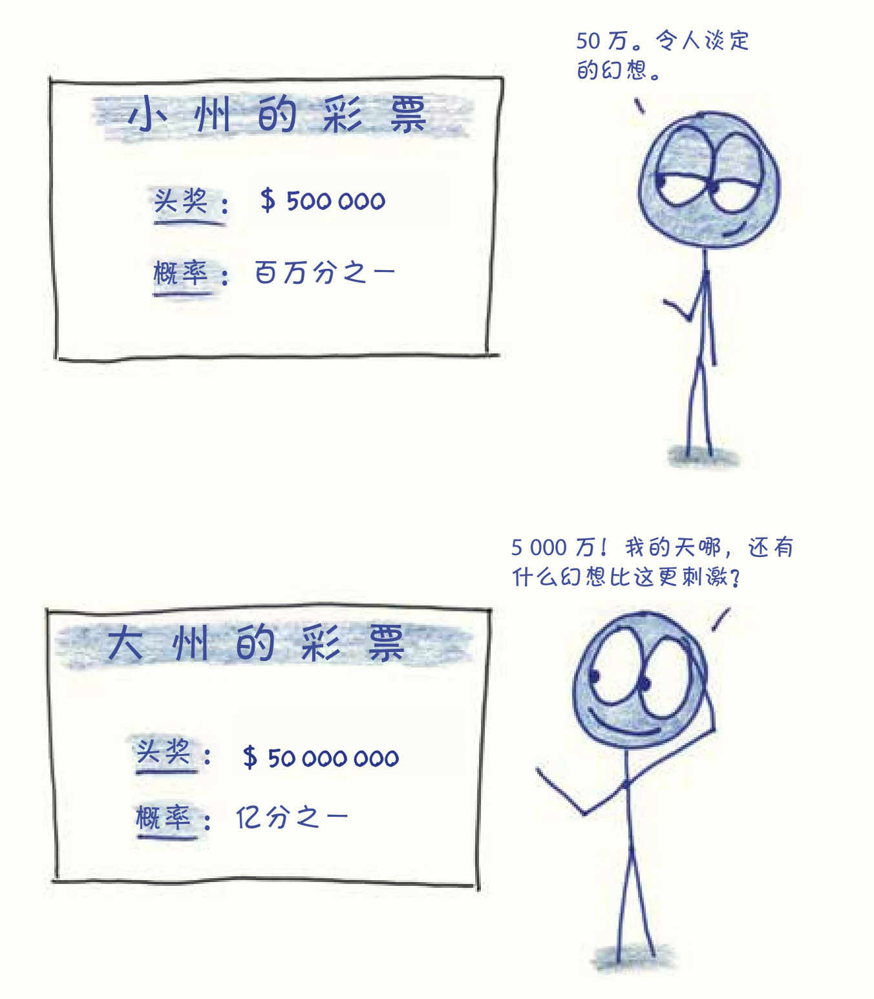
两个州的彩票期望值是一样的：平均每张彩票的价值为0.5美元。不过梦想家在心理上会倾向于概率极小的超级大奖。
10. 喜欢刮东西的人
哈哈，别担心，这位买家知道自己在做什么。彩票中的现金奖励和所有关于概率的长篇大论都与他无关，买到在刮刮乐彩票上刮掉涂层的机会，对他来说已经是美妙的享受了。在他眼中，“刮刮乐”的意义真的就是字面意思：“刮一刮就很快乐”。